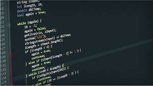

Functions and Procedures
You will encounter different names for this e.g. subroutine. Use the term subroutine as the catch-all term for a block of code that is intended to be used several times in your program or that just make sense to group the statements together under one heading to mek the code more manageable and easier to read.
- A function is a subroutine that returns a value to the calling program
- A procedure is a subroutine that does not return a value to the calling program
All languages will come with a number of built-in subroutines e.g. print(), input(), int() etc.. These may be either functions or procedures e.g.
print()- a procedure that outputs text to the screen, no value is returned to the main program when this is calledyour_input = input()- function that returns whatever the user types on the keyboard when the line is executed
Note
Take note of the different syntax used when calling a function and a procedure. The function returns a value, that value needs to be assigned to a variable
All subroutines can contain arguments, these are the values or variables inside the brackets when the subroutine is called:
Procedure
A typical use for a procedure is to print a menu to the screen, especially as we are likely to want to display this several times during the course of a program:
Functions
Functions return a value to the calling program:
This can be used in combination with the show_menu() procedure:
Parameters
When you define and declare your subroutine, the data it might need is included in the brackets following the subroutine identifier e.g.
Here the variables a and b are known as the parameters of the function.
It will be called, e.g.
The variables first and second are the arguments.
AQA Pseudocode
A function using AQA pseudocode. It is a function because it includes the RETURN statement.
A procedure using AQA pseudocode. There is no RETURN statement.
OCR Pseudocode
Benefits of subroutines?
1. Code Reusability
Subroutines allow you to write a block of code once and reuse it multiple times throughout your program. This reduces code duplication and makes your code more concise.
2. Modularity
Subroutines enable you to break down a large program into smaller, independent modules. Each module can be developed, tested, and maintained separately, making it easier to manage complex programs.
3. Easier Debugging
With subroutines, you can debug a specific section of code without affecting the rest of the program. This makes it easier to identify and fix errors.
4. Improved Readability
Subroutines make your code more readable by providing a clear, descriptive name for a block of code. This helps other developers understand the purpose of the code and how it fits into the larger program.
5. Reduced Complexity
Subroutines can simplify complex code by hiding implementation details and exposing only the necessary information. This makes it easier to understand and work with the code.
6. Better Abstraction
Subroutines provide a way to abstract away low-level implementation details, allowing you to focus on the higher-level logic of your program.
7. Faster Development
By reusing existing subroutines, you can speed up your development process and reduce the time it takes to write new code.
8. Improved Collaboration
Subroutines make it easier for multiple developers to work on a project together. Each developer can focus on a specific subroutine without affecting the rest of the codebase.
Variables and scope in code
There are two main types of variables:
- Local Variables: These are defined inside a function or a block of code and can only be accessed within that scope.
- Global Variables: These are defined outside of any function or block of code and can be accessed from anywhere in the program.
Scope Rules
Here are the scope rules to keep in mind:
- A variable defined inside a function or block of code is only accessible within that scope.
- A variable defined outside of any function or block of code is a global variable and can be accessed from anywhere in the program.
- If a variable with the same name is defined both locally and globally, the local variable takes precedence within its scope.
For example: